Once you have begun a product installation, you can monitor your installation job. The screenshot below shows the installation job view of Marketplace.
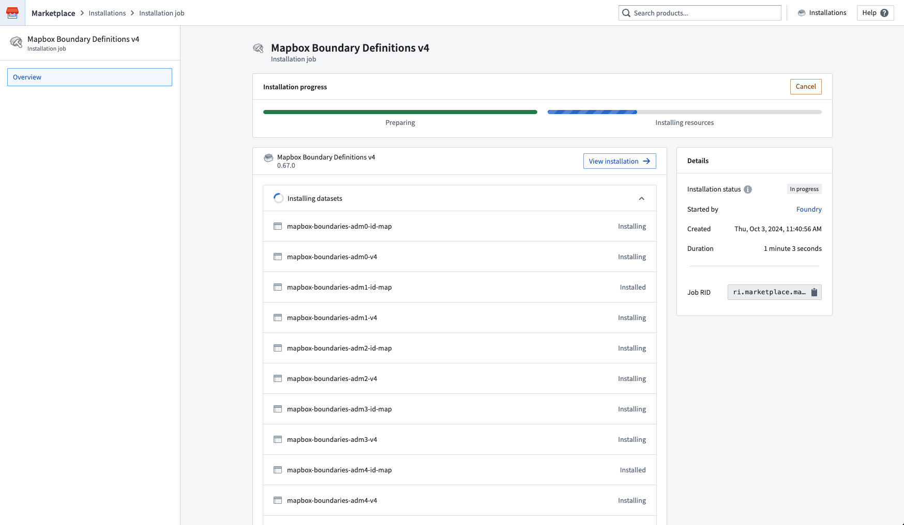
Select View installation in the top right to see your completed installation. From here, you can navigate to your installed resources to begin using them. The project or folder location where your resources are saved is linked in the right panel.
The screenshot below shows a completed product installation in Marketplace.
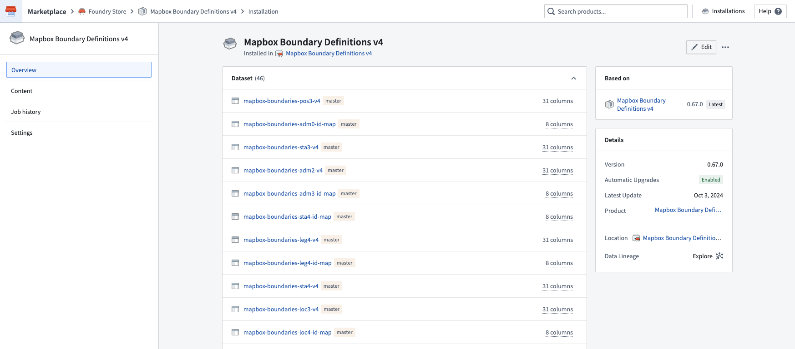
After installation, you can configure a number of options for an installation from the Settings panel.
The screenshot below shows the Settings panel of Marketplace's installation view. From here, the automatic upgrades configuration can be set and the installation can be locked or unlocked to allow edits to the installed content.
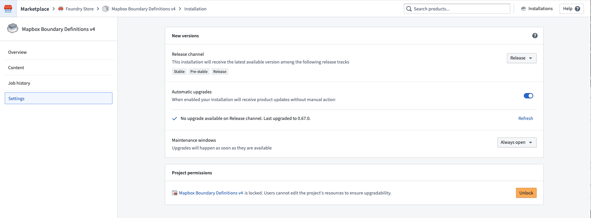
For some resource types, unlocking an installation may not allow edits to the installed resources. Note that Code Repositories must be packaged with the source code for it to be editable in an installation.
Locking a project prevents users from editing installed resources directly. This is recommended for Production mode installations to ensure safe upgrades, as edits to installed content will be overwritten when a new product version is applied.
You can lock a project during installation from the Create installation job dialog, or after installation from the Settings page of the installation. On the Settings page, the Project permissions section shows the current lock status of the project. Select Lock down to lock an unlocked project.
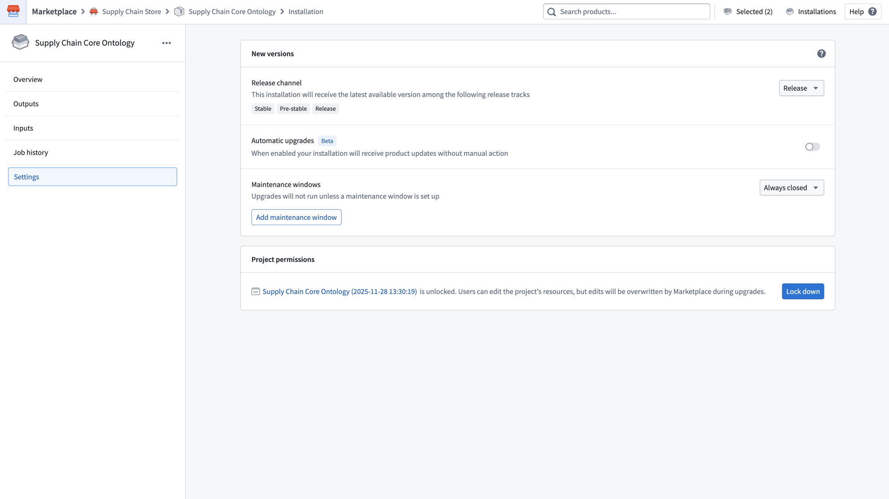
When a project is locked:
To unlock a locked project, navigate to the Settings page of the installation and select Unlock in the Project permissions section.
Alternatively, you can unlock the project from Compass. Navigate to the project, open the Access panel, select the Settings tab, and under Advanced select Unlock.
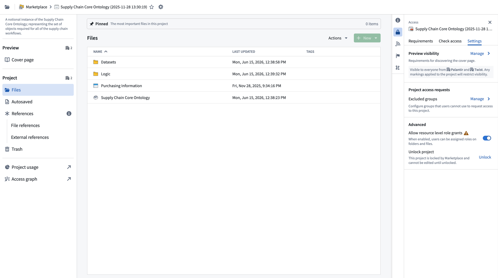
Once unlocked, users can edit the project's resources, but edits will be overwritten by Marketplace during upgrades.
For information on automatic upgrades, manual upgrades, and downgrades, review our documentation.
To delete an installation along with all its resources, start by selecting the ellipsis (...) in the upper-right corner of the installation page. Next, choose Delete installation permanently, as shown in the screenshot below.
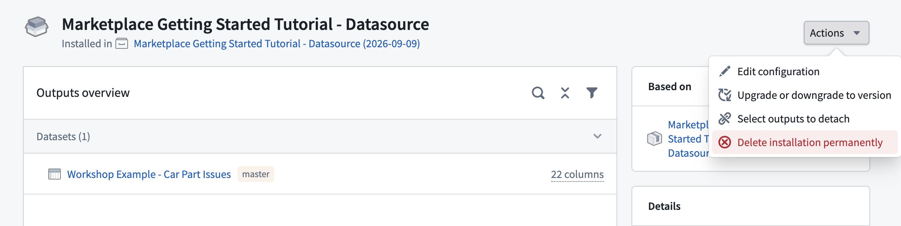
Selecting Delete installation permanently will show a preview of the resources that will be permanently deleted if you proceed. If you do not want to delete these resources, clear the Outputs checkbox. If you want to keep only some of these resources, detach them first instead.
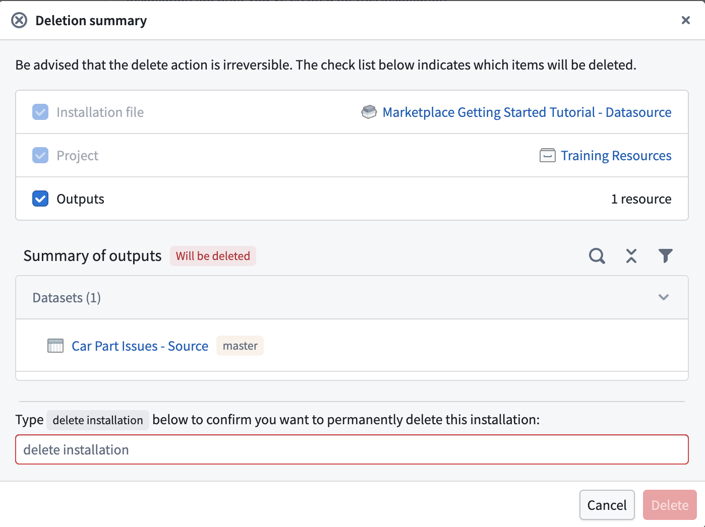
Next, type delete installation in the confirmation text box and select Delete to initiate the uninstallation process.
:::callout{theme="danger"} Warning: Deleting an installation is irreversible. The deletion process will permanently delete the installation, as well as all resources across all installation versions if the Outputs checkbox is checked. If the installation project or folder only contains resources that belong to the installation selected for deletion, the process will also permanently delete the installation project or folder. Otherwise, the deletion of the project or folder will be skipped. :::
If uninstallation is successful, you will be redirected to the installations page. If uninstallation fails, you will receive an error message, as shown below:
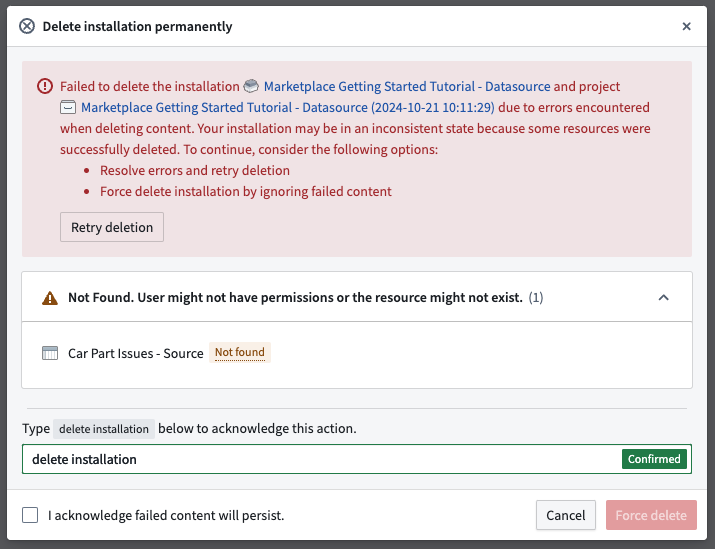
The error message will list the resources that failed to be deleted and the reasons for the failure, as well as the resources that were successfully deleted. You can choose to resolve issues with failed resources before retrying uninstallation, or you can tick the box acknowledging that failed content will persist and select the Force delete button. This will ignore failed resources and delete the installation. The installation project or folder will also be deleted, provided that the project or folder does not contain any other resources that do not belong to the given installation.
Detaching outputs forces the installation to create new outputs instead of reusing the detached resources. Deleting the installation will not delete any detached outputs.
Detaching outputs separates them from Marketplace; detached outputs will no longer be connected to Marketplace in any way. If the detached output was attached to an installation, upgrading that installation will create a new output instead of overwriting the detached output.
You can detach outputs from two places. Both work the same way.
On the installations page, you can detach multiple outputs at once by enabling detach mode and selecting the outputs to detach.
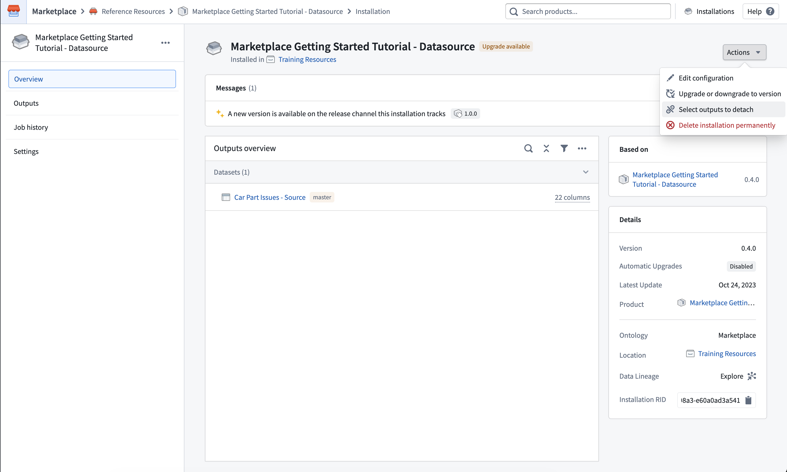
In an installation draft, you can also detach multiple outputs at a time from the Outputs tab.
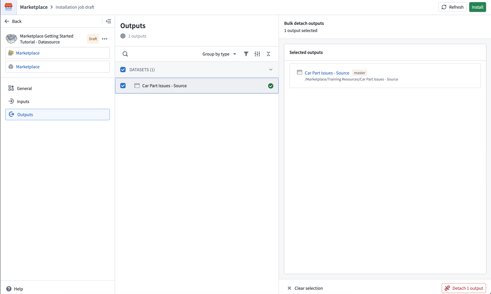
After selecting the outputs to detach, select Detach. A dialog opens listing the outputs to be detached.
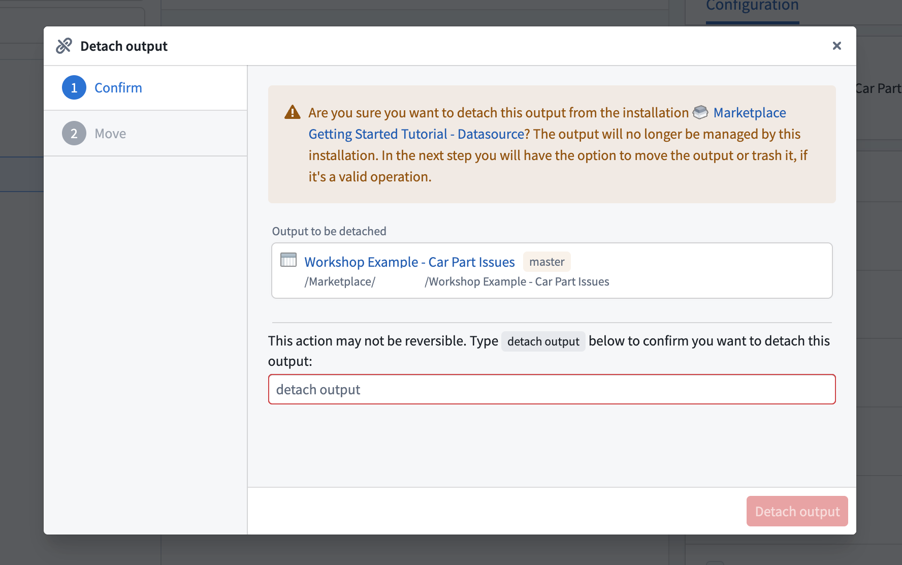
Next, type detach output in the confirmation text box and select Detach to initiate the detach process.
:::callout{theme="danger"} Warning: Detaching an output is irreversible. Detach will permanently separate resources from Marketplace. Take care when detaching a production resource that you want Marketplace to continue managing. :::
Once the outputs have been successfully detached, you can trash, move, or keep the outputs in their existing location. Some outputs might not support trashing or moving, for example, if you lack the required permissions.
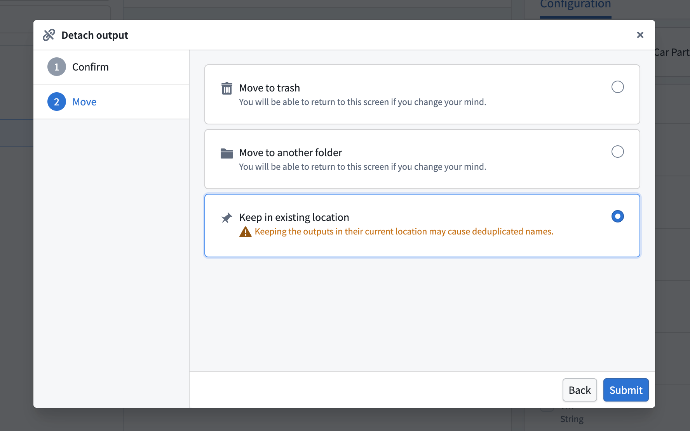